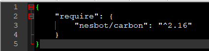

こんにちは。明月です。
PHPのcomposerとはJavaのMaven、C#のNugetと同じ機能で、パッケージ間の依存性を管理するし、ライブラリをダウンロード及びリンクを管理するモジュールです。
先、composerをインストールするように「php.ini」を設定しなければならないです。
以前にインストールした「php」フォルダに移動しましょう。
link - [PHP] PHP 開発環境設定とEclipse(IDE)の設定
上の設定ファイルの中でextension=opensslのモジュールがありますがセミコロン(;)でコメント処理になっております。このセミコロンを削除しましょう。
そしてコマンドで「php」がインストールされたフォルダに移動しましょう。
curl -sS https://getcomposer.org/installer | php
(※参考に私の場合は今プロクシ設定している環境で使っているので「-x -U」オプションでプロクシ設定しましたが、この部分は省略してもよいです。)
インストールが完了しました。というメッセージが表示されました。
その後、composerバッチファイルを作成しましょう。
そしてコマンドで「composer」ということで入れたら、下記とおりの画面がでます。
ここまでcomposerがインストールが終わって設定が完了しました。
link - https://packagist.org/
Javaのmavenレポジトリより少し整理されてない雰囲気ですが、必要な情報はあるのでかなり便利です。
検索テキストで「Carbon」ということで入れて検索しましょう。参考に「Carbon」はデートフォーマット関連ライブラリです。
そうしたらよく使う順番で検索されますが、一番上の結果を選択しましょう。
様々な説明がありますが、時間があれば詳しくみるのはよいですね。でも、我々はライブラリリンクするのが目的なので、下の「Installation」の項目をみましょう。
リンク情報を得たのでドキュメントルートのフォルダに移動しましょう。
ここで「composer.json」ファイルを生成しましょう。
そしてリンク情報を入力しましょう。

composerを実行すればよいですが、筆者の場合はcomposerバッチがあるところをシステムパス設定をしなかったので、直接に絶対パスで実行しました。
ライブラリがタウンロードさせてリンクが完了しました。
これからダウンロードしたライブラリを使ってみましょう。

eclipseを起動してproject explorerを見ると「vendor」フォルダが生成されています。ここでライブラリがダウンロードされたことです。
ここで全てのライブラリに「require」宣言する必要がなしで、「autoload.php」だけ宣言すると使えます。
<?php
// ライブラリ連携
require_once 'vendor/autoload.php';
// ライブラリネームスペース宣言
use Carbon\Carbon;
// Carbonクラスから現在時間を取得する。
$dt = Carbon::now();
// Carbonライブラリのフォーマット変換を使って出力する。
$format = Carbon::createFromFormat('Y-m-d H:i:s', $dt);
echo $format;
?>
現在時間が朝1時に出力しました。これはCarbonライブラリ問題ではなく、ローカル時間設定の問題です。
composerを利用してライブラリをダウンロード、使用することまで完了しました。
- [CakePHP] Errorページを設定する方法2020/02/20 03:00:00
- [CakePHP] Transactionを使う方法とEntityクラスを利用してInsert、Update、Deleteする方法2020/02/19 03:00:00
- [CakePHP] ORMのテーブルFetch設定2020/02/18 03:00:00
- [CakePHP] Cakeフレームワークでデータベースに接続する時に使うQuery式とEntityクラス、Tableクラス、ResultSet2020/02/17 08:16:23
- [CakePHP] データベース(MariaDB(Mysql))を接続する方法2020/02/14 03:00:00
- [PHP] namespaceとuse2020/02/13 03:00:00
- [CakePHP] RequestとResponseに関して2020/02/12 03:00:02
- [CakePHP] PHPのCakeからAjax要請がある時、jsonタイプ(json_encode関数)でResponseする方法とControllerでViewを選択する方法2020/02/08 03:00:00
- [CakePHP] MVCフレームワークのCakeをインストールする方法2020/02/07 03:00:02
- [PHP] 自動require及びincludeをする方法(spl_autoload_register)2020/02/05 03:00:00
- [PHP] 匿名関数(ラムダ式)とクロージャ(closure)2020/02/04 03:00:00
- [PHP] PHPのコーディング領域とデザイン領域を分離するテンプレートライブラリ Smarty2020/02/02 03:00:00
- [PHP] Reflection - Variable編2020/02/01 03:00:00
- [PHP] Reflection - Method編2020/01/31 03:00:00
- [PHP] Reflection - Class編2020/01/30 03:00:00
- [Java] サーブレット環境で現在の実行ディレクトリを取得する方法2020/02/27 03:00:00
- [Java] 日本語をユニコードに変換して、ユニコードから日本語に変換する方法2020/02/26 03:00:00
- [Java] コンソールからデータを受け取る方法(System.in)2020/02/25 03:00:00
- [Java] Servlet環境でWebSocket通信中、HttpSessionを取得する方法2020/02/24 07:47:20
- [Java] WebSocketでWeb Sessionを使う方法(Broadcast)とウェブチャットの例2020/02/22 03:00:00
- [Java] WebSocket (ウェブソケット)2020/02/21 03:00:00
- [CakePHP] Errorページを設定する方法2020/02/20 03:00:00
- [CakePHP] Transactionを使う方法とEntityクラスを利用してInsert、Update、Deleteする方法2020/02/19 03:00:00
- [CakePHP] ORMのテーブルFetch設定2020/02/18 03:00:00
- [CakePHP] Cakeフレームワークでデータベースに接続する時に使うQuery式とEntityクラス、Tableクラス、ResultSet2020/02/17 08:16:23
- [CakePHP] データベース(MariaDB(Mysql))を接続する方法2020/02/14 03:00:00
- [PHP] namespaceとuse2020/02/13 03:00:00
- [CakePHP] RequestとResponseに関して2020/02/12 03:00:02
- [CakePHP] PHPのCakeからAjax要請がある時、jsonタイプ(json_encode関数)でResponseする方法とControllerでViewを選択する方法2020/02/08 03:00:00
- [CakePHP] MVCフレームワークのCakeをインストールする方法2020/02/07 03:00:02